IELTS 词汇教练 · 上手与部署指引
AAA_Vocab —— 一个 Memoria 知识库 + 一个 Trae 智能体。把「背单词」换成「能被批改的主动输出训练」。
A Memoria knowledge base + a Trae agent. Setup & deployment guide.
中文
你会得到什么
一个可以对话的 IELTS 词汇教练：音标与听力陷阱、词典释义（英英 + 中文，标注 Oxford / Cambridge / Collins 来源）、词族与高频搭配矩阵、近义词辨析矩阵、主动输出练习（口语 / 写作场景、填空、词组编织），以及基于间隔重复（SM-2 改良）的**复习排程与学习记录**。全部数据存在你自己的磁盘上。
准备（两件东西）
| 需要 | 从哪来 |
|---|---|
| Trae（AI IDE，免费） | 官网 trae.ai 下载安装（就是第 1 步那张截图） |
| Memoria（本知识库的编辑器，Windows 免安装） | Releases 下 Memoria-v*-win64.zip（内置模型，完全离线）或 -lite.zip（约 34 MB，首次用语义检索时联网取模型），解压后跑 Memoria.exe |
只想用智能体、不想装 Memoria？见下方「捷径」。
步骤
- 下载并安装 Trae：打开官网 → 点「下载 TraeCode」→ 按提示安装并登录。
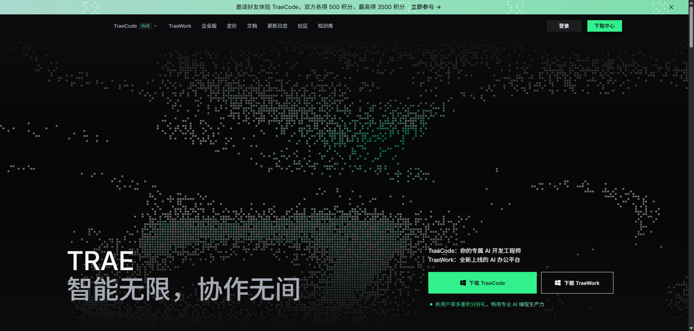
官网下载页： 下载 TraeCode/下载中心。 - 用 Memoria 打开本知识库：启动 Memoria → 欢迎页点「打开知识库」→ 在「选择知识库文件夹」里选中本仓库根目录（能看到
vocab/、expressions/的那一层）。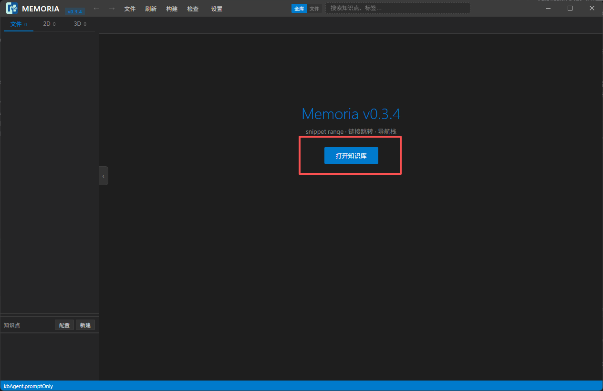
Memoria v0.3.4 主界面（欢迎页 / 空态）。 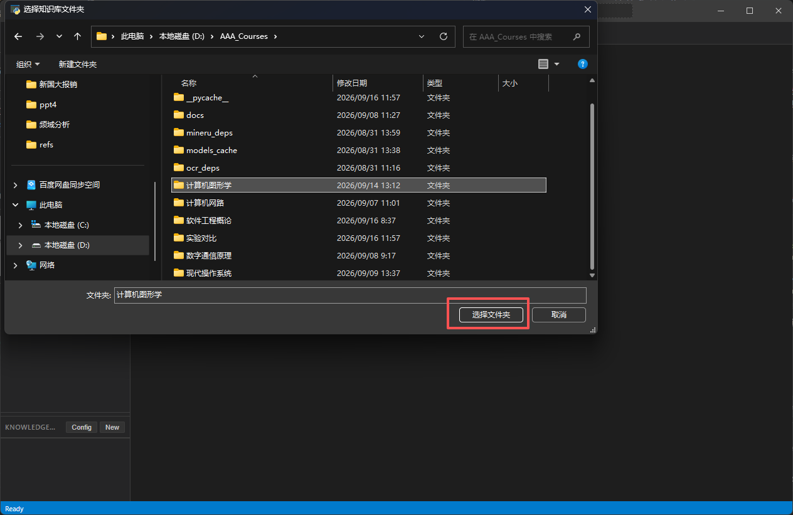
系统「选择知识库文件夹」对话框：选中本仓库根目录。 - 创建 Trae 智能体：顶栏「文件」→「创建 Trae 智能体」。
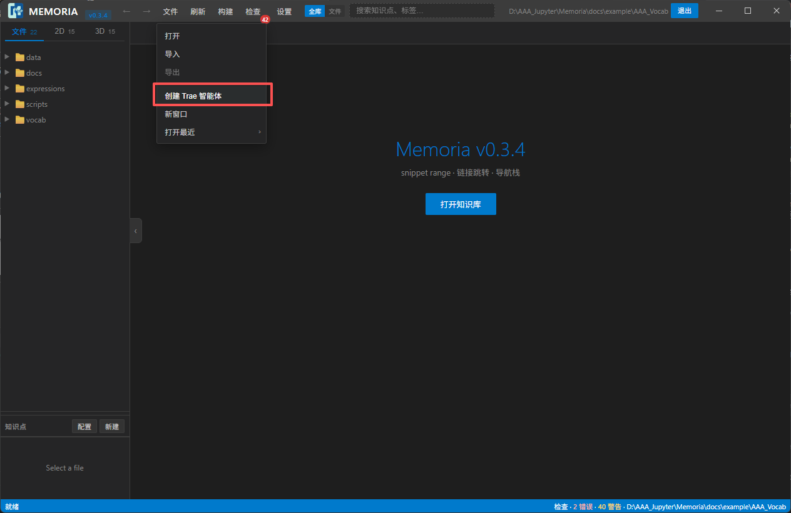
「文件」菜单：打开 / 导入 / 导出 / 创建 Trae 智能体 / 新窗口 / 打开最近。 - 复制指令：弹出「智能体工具包已生成」——它把工具包写进
<本库>/.memoria/agent/（幂等，不会覆盖你的复习记录），点右下「复制指令」把完整指令复制到剪贴板。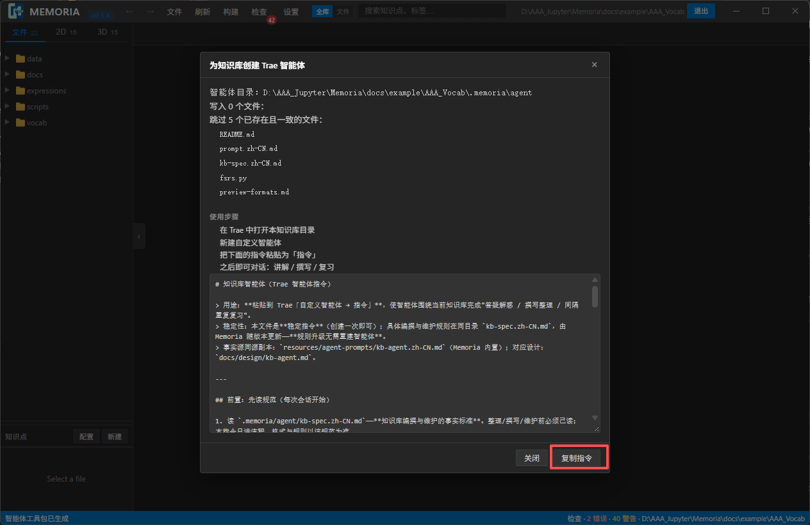
弹窗含「智能体目录」、写入/跳过的文件清单、4 条使用步骤，以及底部的指令全文与「复制指令」。 - 在 Trae 里新建自定义智能体：在 Trae 中打开本知识库目录 → 智能体面板点「Create Agent」→ 名称随意（如
IELTS Coach）→ 把刚复制的指令粘进「指令 / Prompt」框 → 创建。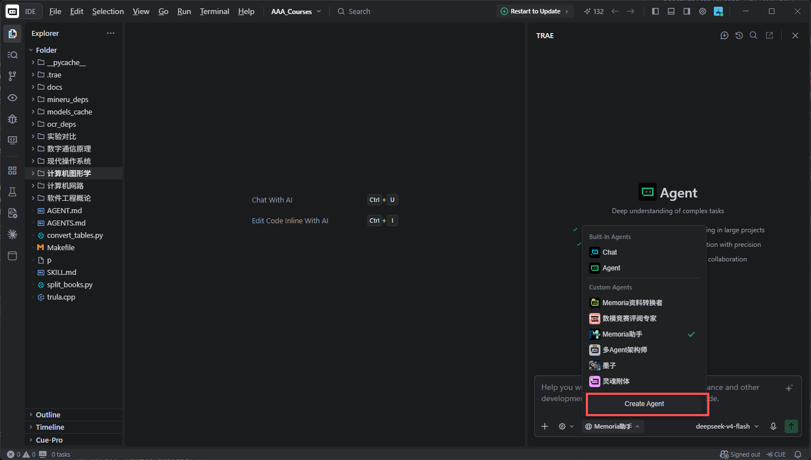
Trae 的 Create Agent：Name / Prompt（Paste Here）/ Smart Generate / Create。 - 开始对话：在 Agents 面板选中刚建好的智能体，直接说一句，例如：
用我的词汇库开始今天的复习
它会读vocab/，按.memoria/agent/里的规范与复习排程脚本给你出题、讲解、批改。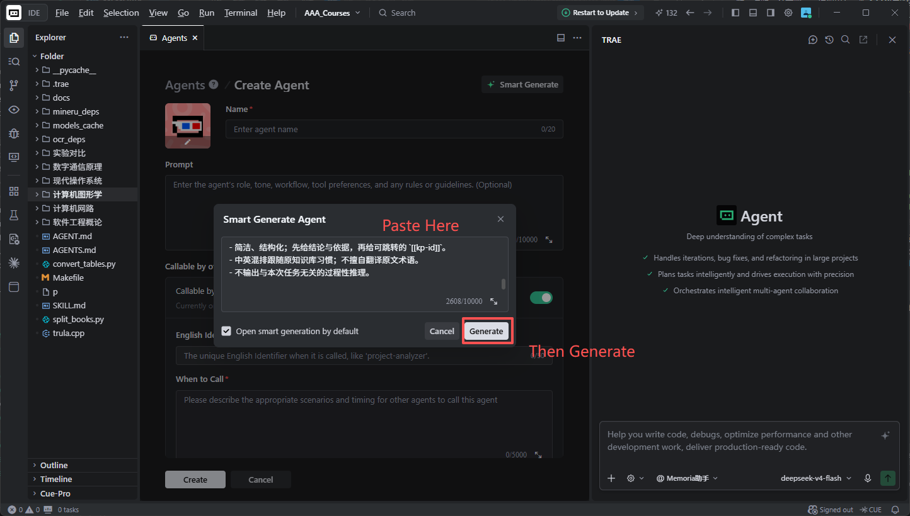
Trae 的 Agents 面板：选中自定义智能体。 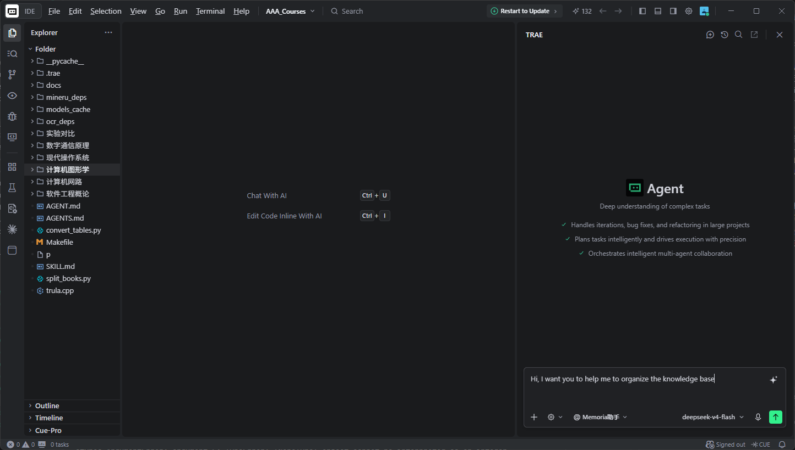
开始对话（示例：让它帮你整理 / 复习本知识库）。
推荐提示词（试试这个）
本仓库自带一份主动输出型的词汇提示词：prompts/IELTS-vocab.md。
把它的内容贴给刚建好的智能体，然后说一句：
按这份提示词处理vocab/legacy.md（或：帮我过一遍vocab/里的词）
捷径：不装 Memoria 也能用
智能体要读的那份指令也随 Memoria 仓库公开：resources/agent-prompts/kb-agent.zh-CN.md。直接在 Trae 里打开本知识库目录 → 新建自定义智能体 → 把这份指令粘进去即可。
resources/agent-prompts/kb-agent.zh-CN.md—— 智能体指令（建智能体时粘一次）resources/agent-prompts/kb-spec.zh-CN.md—— 知识库编撰 / 维护规范（智能体每次会话先读）prompts/IELTS-vocab.md—— 推荐的主动输出提示词docs/—— 本知识库的详细规格（词条格式 / 需求 / 智能体规格）
用 Memoria 打开过本库的话，它会把工具包自动写到 .memoria/agent/（指令 + 规范 + fsrs.py 复习排程脚本）；这些属于运行时产物，不随仓库公开。
数据与隐私
- 全部本地：词汇是普通 Markdown 文件，学习记录在
.memoria/；没有账号、没有云同步。 - 想备份 / 同步：把这个目录用 Git 管起来推到自己账号，或直接网盘同步整个文件夹。
- 复习记录：
.memoria/agent/review/。
常见问题
- 打开知识库后左侧是空的？确认选中的是本仓库根目录（有
vocab/、expressions/的那层），而不是它的上一级。 - 智能体答得太泛？先让它读
.memoria/agent/kb-spec.zh-CN.md，并明确「按推荐的 IELTS 提示词格式输出」。 - 想改词条格式？见
docs/vocab_format.md（词条格式）与docs/format.md。
English
What you get
A conversational IELTS vocabulary coach: IPA & listening traps, dictionary-based definitions (English first, Chinese in parentheses, with Oxford / Cambridge / Collins attribution), word families and high-frequency collocations, a near-synonym confusion matrix, active-output drills (speaking / writing scenarios, gap-fill, word weaving), plus spaced-repetition scheduling and learning records. All data stays on your own disk.
Prerequisites (two things)
| What | Where |
|---|---|
| Trae (AI IDE, free) | Download from trae.ai (this is the screenshot in step 1) |
| Memoria (editor for this knowledge base; portable on Windows) | Grab Memoria-v*-win64.zip (models bundled, fully offline) or -lite.zip (~34 MB, fetches models on first use) from Releases, unzip and run Memoria.exe |
Only want the agent and don't want to install Memoria? See “Shortcut” below.
Steps
- Download and install Trae: open the website →
Download TraeCode→ install and sign in.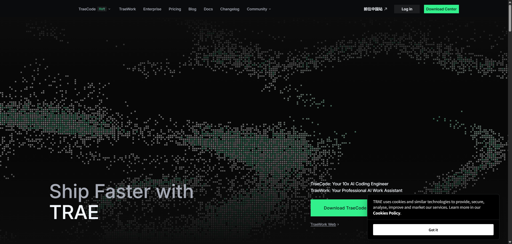
Trae website: Download TraeCode/Download Center. - Open this knowledge base in Memoria: launch Memoria →
Open knowledge base→ pick the repository root (the folder containingvocab/andexpressions/).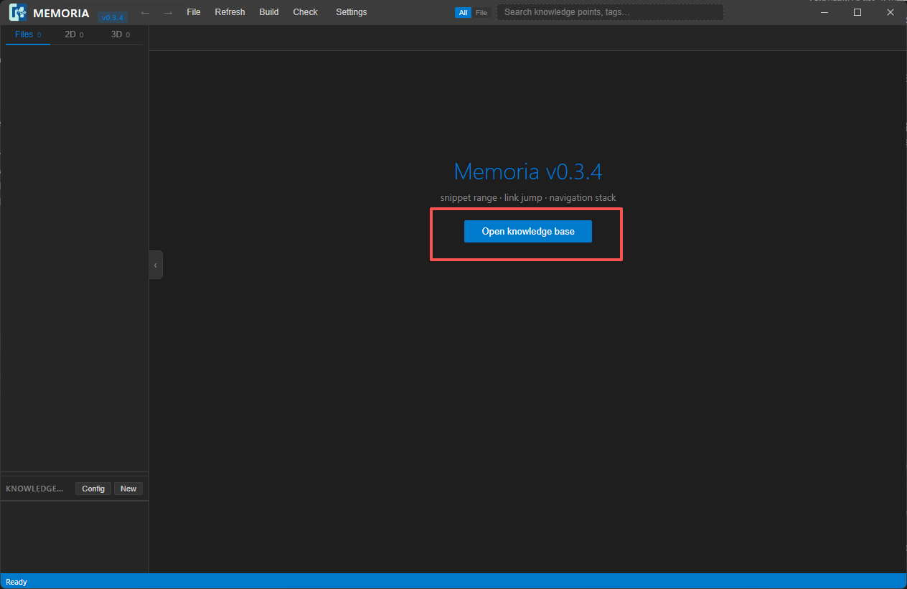
Memoria (English UI) before a knowledge base is opened. The system “select folder” dialog — choose this repository's root folder. - Create the Trae agent kit: menu
File→Create Trae Agent.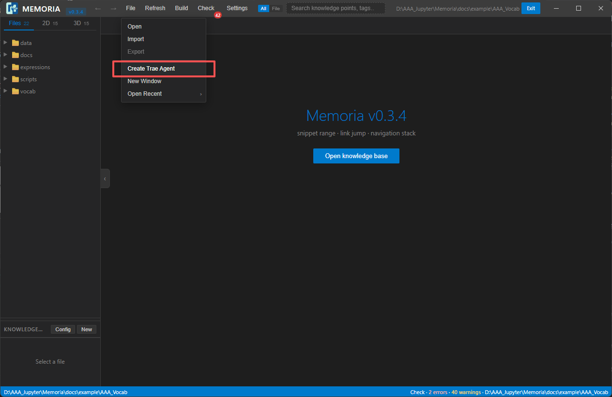
The Filemenu: Open / Import / Export / Create Trae Agent / New Window / Open Recent. - Copy the instructions: the “Agent kit generated” dialog writes the kit into
<kb>/.memoria/agent/(idempotent — it never overwrites your review records). ClickCopy instructionsat the bottom right.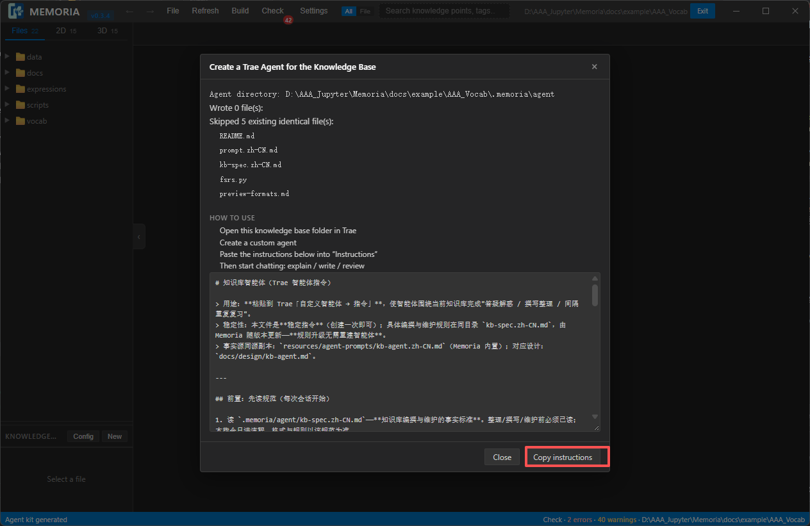
Shows the agent directory, written/skipped files, the 4 usage steps, the full instruction text and Copy instructions. - Create a custom agent in Trae: open this repository folder in Trae → click
Create Agentin the Agents panel → name it anything (e.g.IELTS Coach) → paste the copied instructions into thePromptbox → Create. (Trae's own UI is English in both language versions, so the screenshot below is shared.)Trae's Create Agent dialog: Name / Prompt (Paste Here) / Smart Generate / Create. - Start chatting: select the agent you just created in the Agents panel, then simply say:
Start today's review with my vocabulary library.
It readsvocab/and follows the spec and review-scheduling script in.memoria/agent/to quiz, explain and grade you.Trae's Agents panel with the custom agent selected. Start the conversation (example: ask it to organize / review this knowledge base).
Recommended prompt (try this one)
This repository ships an active-output vocabulary prompt: prompts/IELTS-vocab.md.
Paste its content to the agent you just created, then say:
Processvocab/legacy.mdwith this prompt (or: walk me through every word invocab/)
Shortcut: use it without Memoria
The agent instructions also ship publicly with the Memoria repository: resources/agent-prompts/kb-agent.zh-CN.md. Open this knowledge base folder in Trae → create a custom agent → paste those instructions.
resources/agent-prompts/kb-agent.zh-CN.md— agent instructions (paste once when creating the agent)resources/agent-prompts/kb-spec.zh-CN.md— knowledge-base authoring / maintenance spec (read at the start of every session)prompts/IELTS-vocab.md— the recommended active-output promptdocs/— detailed specs for this knowledge base (entry format / requirements / agent spec)
If you do open this library in Memoria, it writes the kit into .memoria/agent/ (instructions + spec + the fsrs.py review scheduler); those are runtime artifacts and are not published with this repository.
Data & privacy
- Everything is local: vocabulary lives in plain Markdown files, learning records in
.memoria/. No account, no cloud sync. - To back up / sync: put this folder under Git and push it to your own account, or sync the folder with any cloud drive.
- Review records:
.memoria/agent/review/.
Troubleshooting
- Left pane is empty after opening the KB? Make sure you picked the repository root (the folder containing
vocab/andexpressions/), not its parent. - Agent answers are too generic? Ask it to read
.memoria/agent/kb-spec.zh-CN.mdfirst and to follow the recommended IELTS prompt format. - Want to change the entry format? See
docs/vocab_format.mdanddocs/format.md.
这一页是怎么部署的
本页就在 Memoria 仓库里：docs/example/AAA_Vocab/，由 .github/workflows/pages.yml 用 GitHub Actions 发布 —— 该 workflow 只上传这一个目录，所以 Memoria 自己的 docs/ 不会跟着上站。
- 一次性开启：仓库 → Settings → Pages →
Source选 GitHub Actions → 保存。（页面上不会让你选分支/目录——路径由 workflow 里的path:决定。） - 日常更新：只要 push 改动
docs/example/AAA_Vocab/**，Actions 自动重建；也可以在 Actions 页手动Run workflow。 - 站点地址：
https://<owner>.github.io/Memoria/—— 打开就是这份指引（Settings → Pages 顶部也会显示）。
想发布到自己的账号 / 自己的仓库？
这页是纯静态的（index.html + images/），换个仓库照样能发：
- 新建仓库：
New repository→ 选 Public → 不要勾选 “Add a README” → Create。 - 上传本目录内容：网页版
Add file→Upload files拖进去即可；命令行：cd <本目录> git init -b main git add . git commit -m "IELTS vocabulary knowledge base + setup guide" git remote add origin https://github.com/<你的用户名>/<仓库名>.git git push -u origin main - 开启 Pages：Settings → Pages →
Source选 Deploy from a branch →Branch选 main + / (root) →Save。 - 拿到网址：
https://<你的用户名>.github.io/<仓库名>/（等 1 分钟左右）。
index.html 必须在站点根（本仓库里是 docs/example/AAA_Vocab/index.html，与 images/ 同级）；③ 用 Actions 发布时，Pages 的 Source 必须是 GitHub Actions（不是 “Deploy from a branch”）；④ 首次部署有时要等 1–2 分钟。Markdown 版同一份内容见本目录的 GUIDE.md（GitHub 上可直接阅读，便于改动与 diff）。